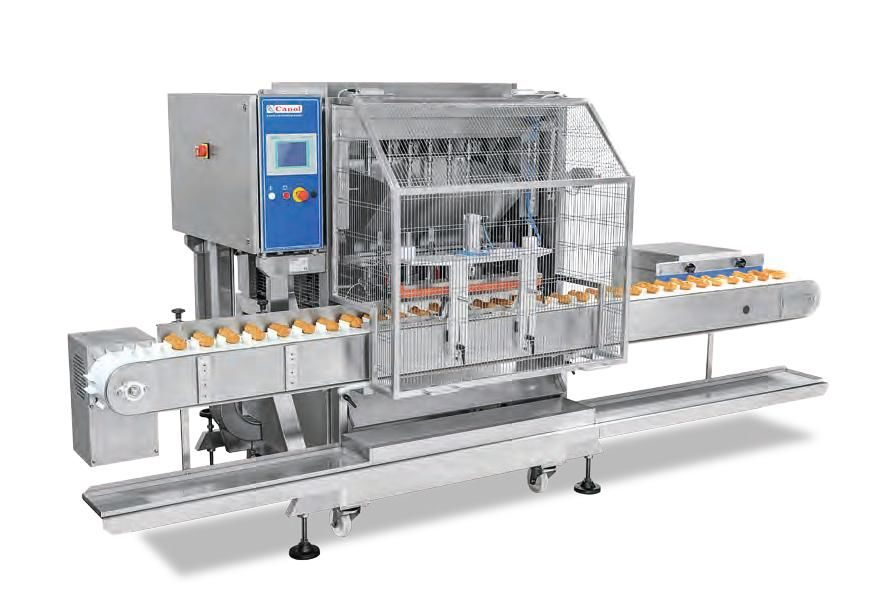
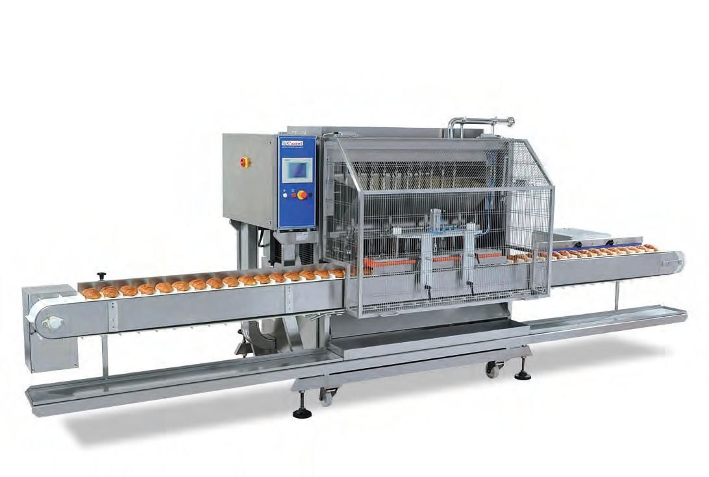
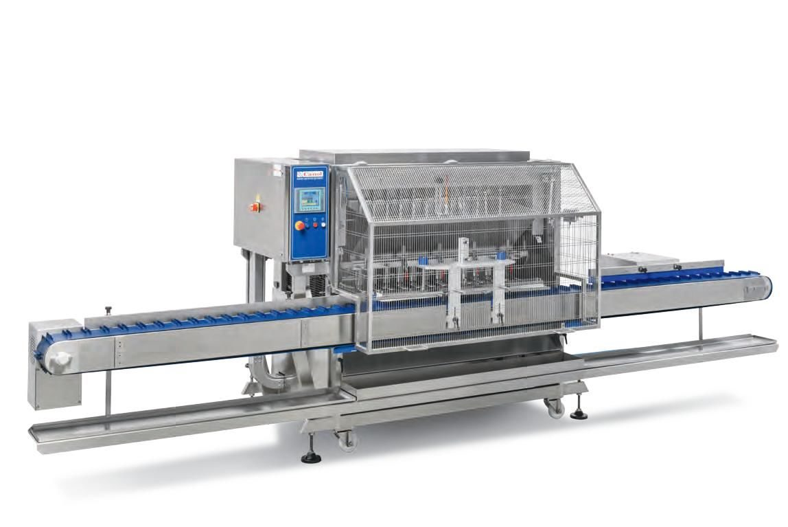
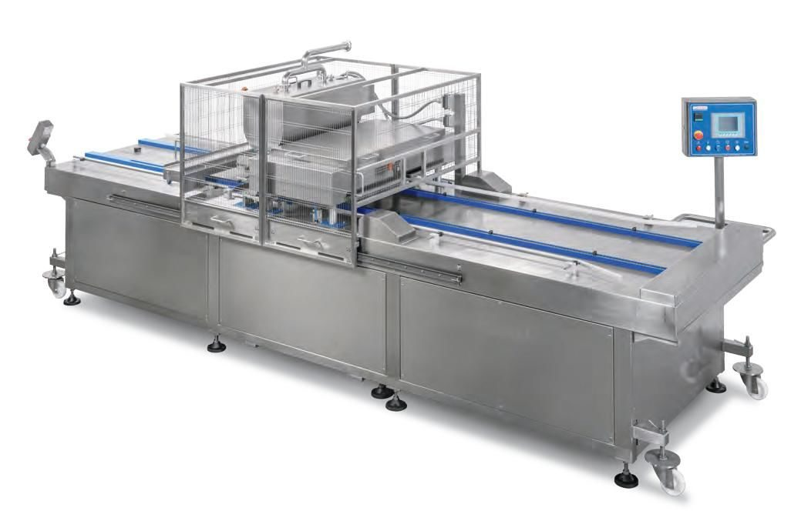
CANOL
Дозаторы начинки
Горизонтальные и вертикальные инжекторы наполняют кремом, джемом или другой начинкой круассаны, эклеры, бриоши и другие изделия.
- 3 600–7 200 шт./ч у серии SIR
- Бункеры от 50 до 95 л
Сравнение дозаторов SIR
| Модель | Иглы | Бункер | Выпуск |
|---|---|---|---|
| SIR-V6 | 6 | 50 л | 3 600 шт./ч |
| SIR-V10 | 10 | 80 л | 6 000 шт./ч |
| SIR-V12 | 12 | 95 л | 7 200 шт./ч |
Фотографии и схемы


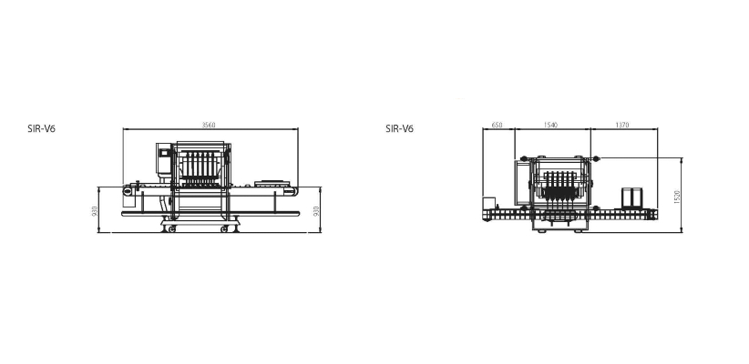

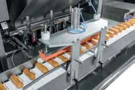


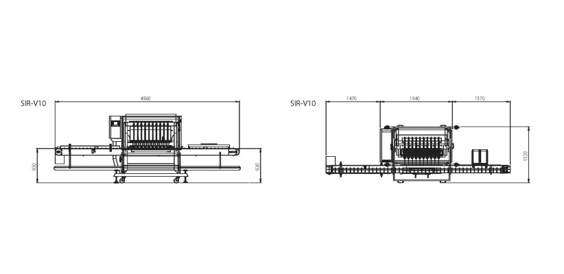

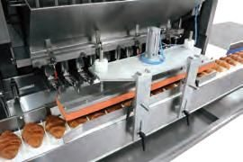


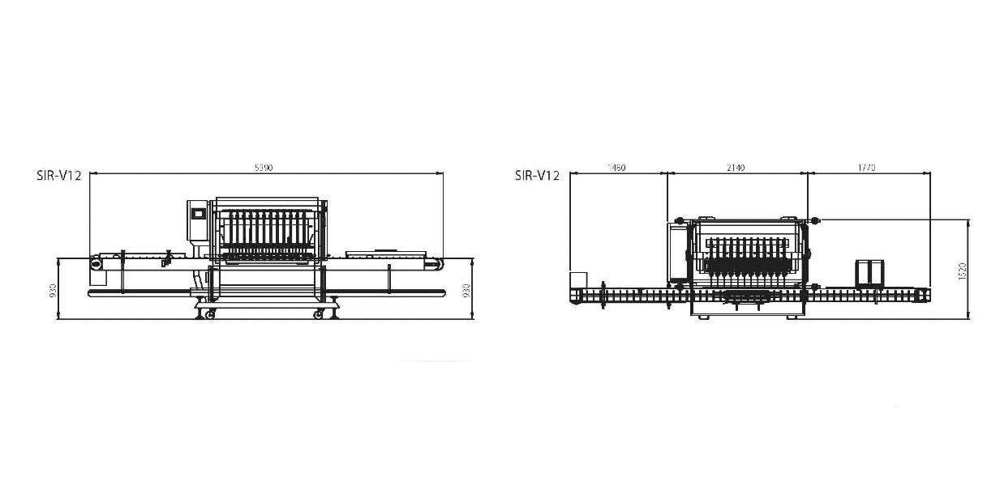

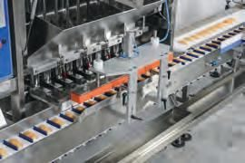


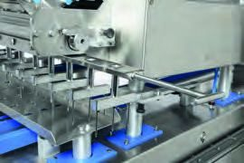

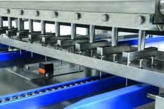

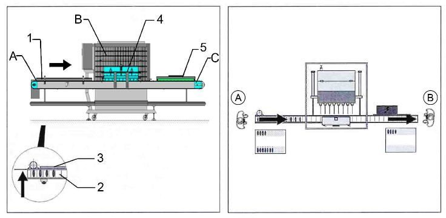


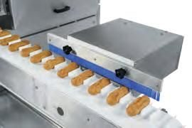


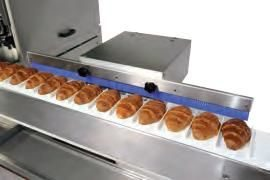

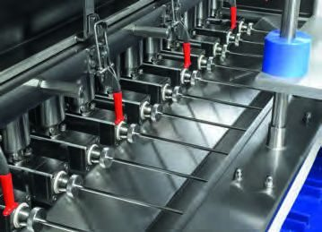

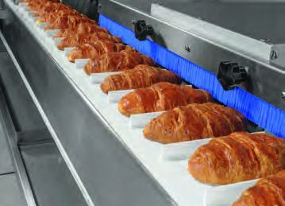
Описание и комплектация
Инжекторные линии CANOL (модификации SIR-V6, SIR-V10, SIR-V12, VID) служат для автоматического наполнения начинкой кондитерских изделий (каноли, круассаны, крапфены, эклеры, бриоши). Горизонтальные и вертикальные дозаторы начинки востребованы в малых и средних кондитерских цехах, пользуются ими и крупные предприятия пищевой промышленности.
- Производитель: Италия
- Прост и надежен в эксплуатации
- Высокопроизводительный, значительно экономит время и рабочие ресурсы
Компания TRADE TECHNOLOGIES, являясь официальным представителем предприятия CANOL, выполняет заказы на поставки инжекторных линий бренда в РФ, Грузию, Белоруссию, Казахстан.
Дозаторы Canol способны наполнять сырье начинкой двумя разными способами:
- Точечно. Начинка (варенье, джем, крем) вводится только в одном месте внутри полуфабриката. Этот вариант подходит для продукции квадратной или круглой формы, например: слоеные булочки, крапфен.
- Линейно. Крем или варенье вводится внутрь продукции по прямой. Это подходит для кондитерской продукции удлиненной формы: круассаны, каноли.
Технические характеристики: 6 игл, загрузочный бункер 50 л, производительность 3600 шт./ч
Горизонтальный дозатор начинки Canol SIR-V10Технические характеристики: 10 игл, загрузочный бункер 80 л, производительность 6000 шт./ч
Горизонтальный дозатор начинки Canol SIR-V12Технические характеристики: 12 игл, загрузочный бункер 95 л, производительность 7200 шт./ч
Вертикальный дозатор начинки Canol (Vertical Injecting and Depositing line)Принцип действия
Производственный цикл делится на 3 этапа:
- Продукция, подаваемая со стороны (A), попадает в яйчейки (1) транспортерной ленты (2). При попадании на линию (3) продукция должна разместиться между планками на ленте.
- Лента транспортера помещает полуфабрикаты на позицию (B), там их положение фиксируется прессом (4); далее через специальные иглы происходит введение начинки.
- После наполнения продукция перемещается в зону (C), где с помощью щетки (5) производится автоматическая разгрузка.
Благодаря постоянным разработкам и модульному принципу производства фирма CANOL может выпускать нестандартные варианты оборудования для решения сложных и нетиповых производственных задач.
Аксессуары и дополнительные опции к дозаторам начинки
Инжекторы-дозаторы начинки CANOL могут поставляться с дополнительными опциями и аксессуарами:
- иглы-наполнители разных диаметров,
- решетчатая лента-транспортер лента в размерах и формах, необходимых под ваш тип продукции,
- бункер загрузки с функцией обогрева (если требуется наполнять изделия шоколадом),
- транспортер для выгрузки продукции с линий.
Материалы производителя
CANOL проектирует оборудование для пекарен и кондитерских в Италии с 1973 года. Мы поставляем линии на правах представителя завода.
Стоимость и поставка
Стоимость рассчитываем по комплектации. Для оборудования CANOL доступны выкуп, лизинг и рассрочка. Безналичная оплата в рублях по курсу ЦБ РФ на день оплаты. В предложенной схеме платежи составляют 30%, 60% и 10%, последний платёж — после ввода в эксплуатацию.